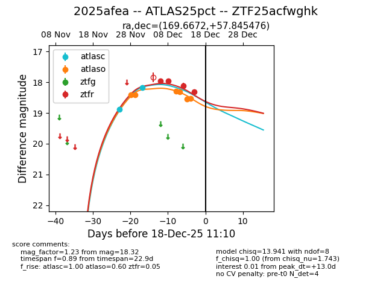
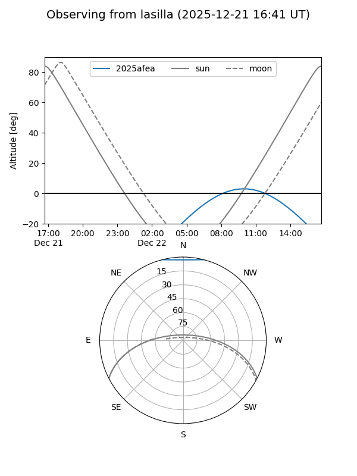
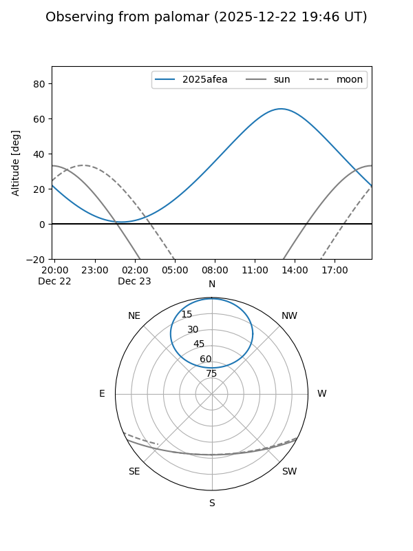
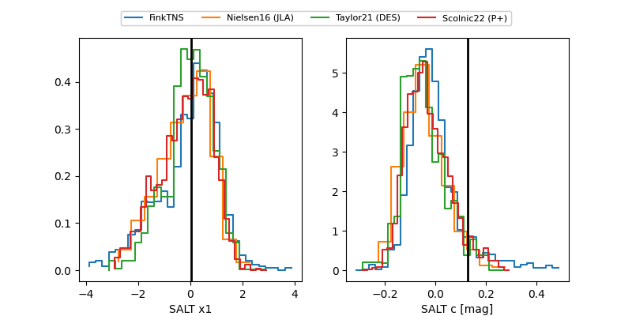

2025afea
Target 2025afea at 2025-12-19 12:27
Aliases and brokers:
FINK: fink-portal.org/ZTF25acfwghk
Lasair: lasair-ztf.lsst.ac.uk/objects/ZTF25acfwghk
ALeRCE: alerce.online/object/ZTF25acfwghk
TNS: wis-tns.org/object/2025afea
YSE: ziggy.ucolick.org/yse/transient_detail/2025afea
alt names
ZTF25acfwghk (ztf,fink_ztf)
2025afea (tns,yse)
ATLAS25pct (atlas)
Coordinates:
equatorial (ra, dec) = 169.6672,+57.84548
equatorial (HMS+DMS) = 11:18:40.12,+57:50:43.71
galactic (l, b) = (144.4933,+55.22737)
Flags:
Photometry:
last atlasc=18.18, atlaso=18.53, ztfr=18.62
2 atlasc, 6 atlaso, 5 ztfr detections
Lightcurve

Visibility


Additional plots
